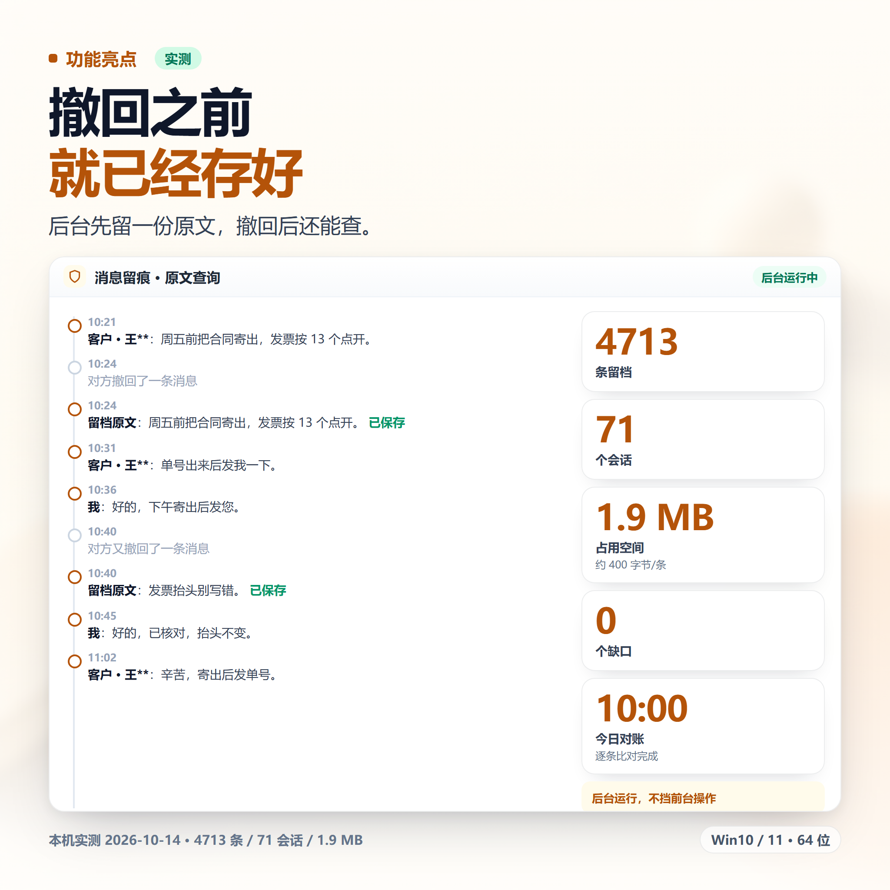
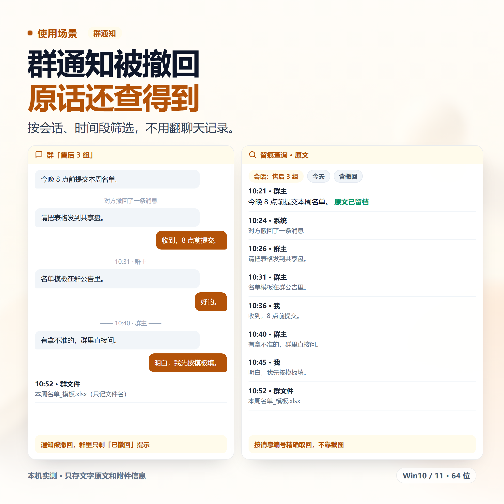
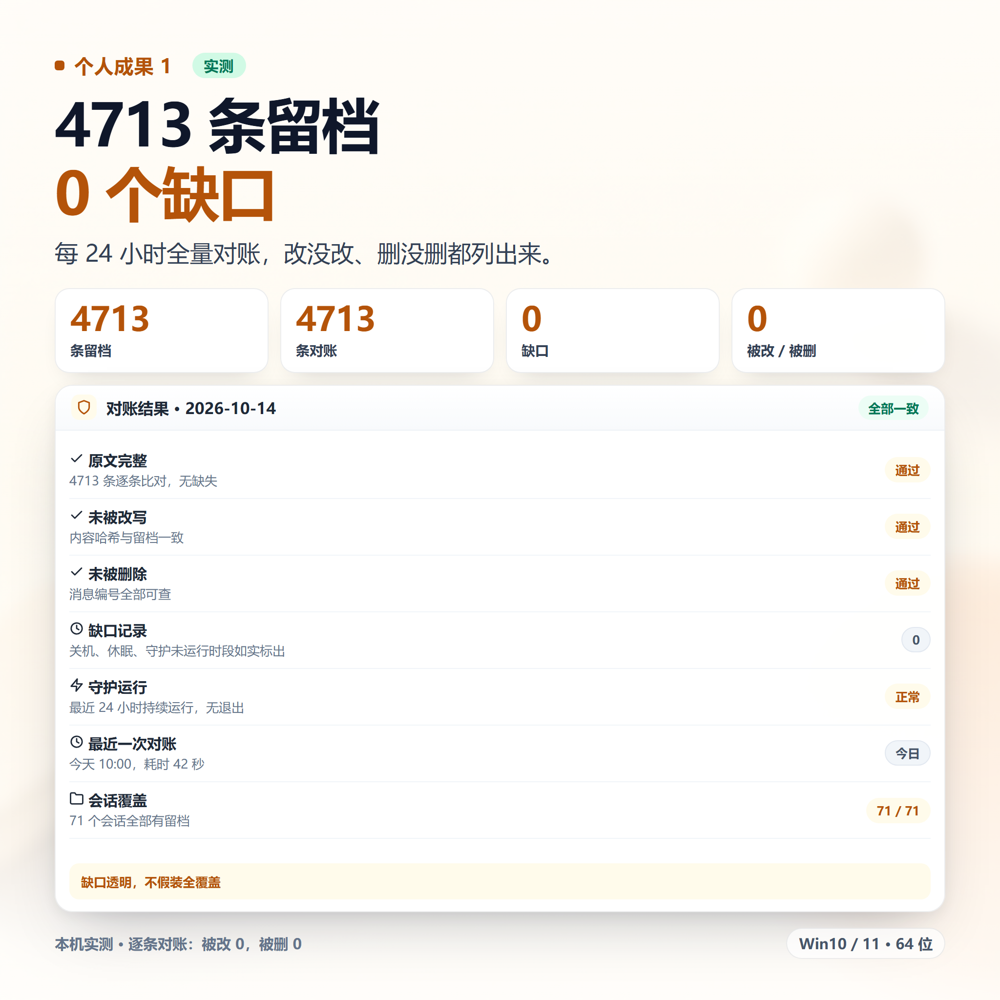
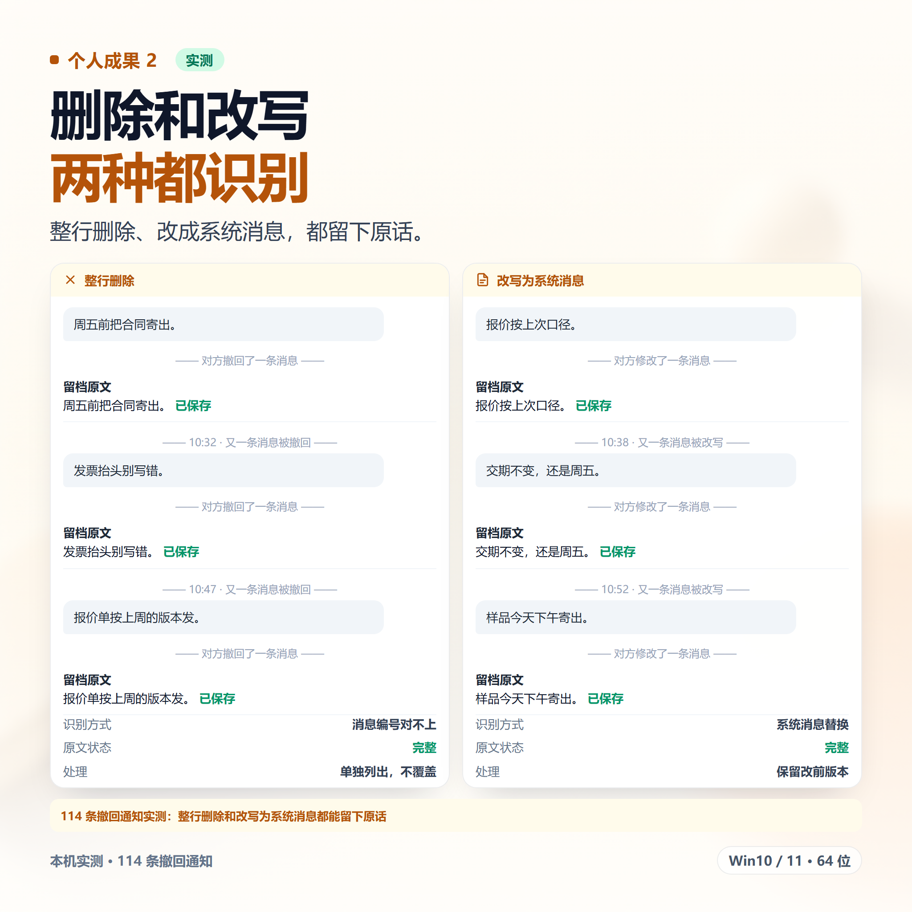
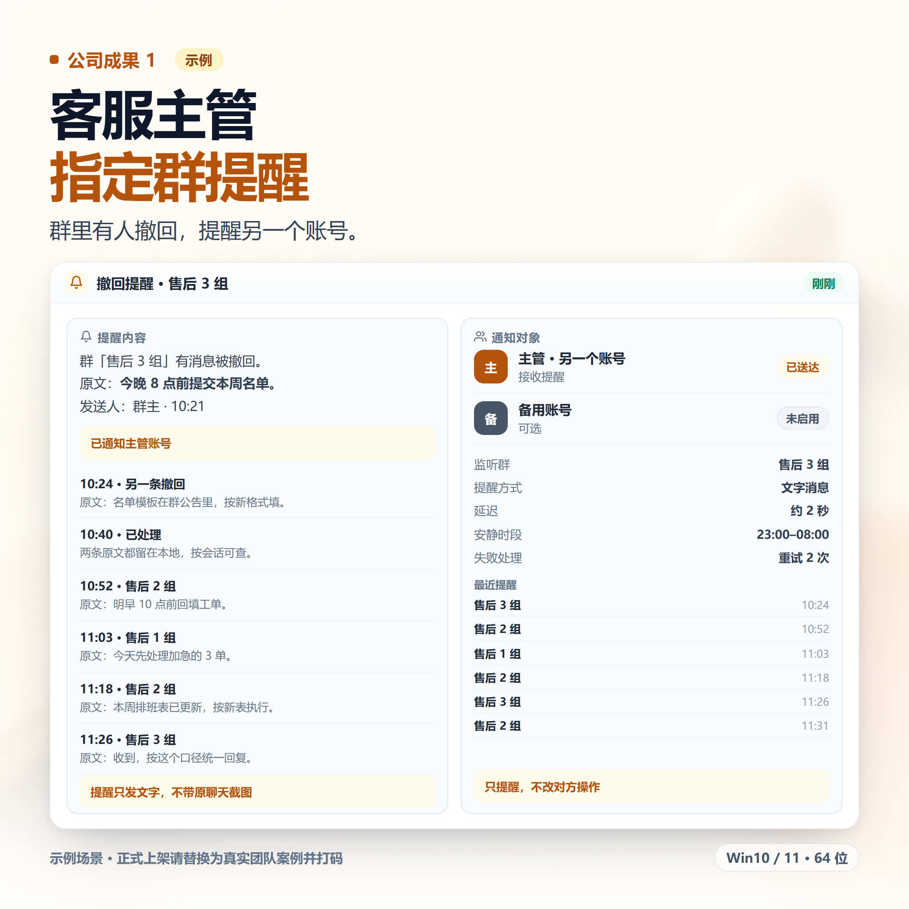
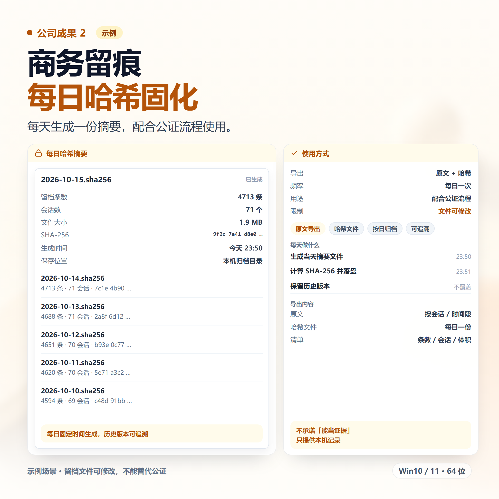

1标题（30 字内，三选一）
WX消息留痕 本地备份 撤回可查 后台运行 送教程
备选：
WX聊天消息留存 撤回删除可查 开机自启 含教程
VX消息本地留存 误删可查 体积小 远程协助
第一个标题最稳。审核不过先换主图和正文开头，别原样重复提交。
2商品描述（直接复制）
【核心功能】 · 后台守护：定时扫描并留存消息，开机自启 · 撤回识别：整行删除、改写成系统消息两种都判 · 原文查询：按会话、时间段列出，按消息编号精确取回 · 缺口记录：关机、休眠、守护未运行的时段如实标出 · 体积：约 400 字节/条，10 万条约 42 MB · 稳定性：意外退出后自己重启、防止双开、优雅停止、每 24 小时全量对账 【适用场景】 群通知没看到就被撤回、客户改口要核对、自己误删想找回、客服和群主留痕。 【优势】 · 不改 WX、不拦截撤回、不装附加组件，只是提前留一份 · 不修改客户端，避免改客户端带来的风险 · 留档在本地，不上传 · 缺口透明，不假装全覆盖 【定制服务】 撤回/删除提醒、每日哈希固化、多账号/多电脑统一查询、关键词提醒。 【发货与安装】 闲鱼聊天窗口发安装包和图文教程。Win10/11 64 位，WX 电脑版需登录并运行。 【拍前须知】 · 守护启动前、关机休眠期间的撤回查不到 · 只存文字原文和附件信息，不存文件本体 · 留档文件可修改，不能替代公证 · 虚拟商品，发货后不退不换
3标签
WX消息本地备份记录留存
撤回可查隐私保护效率工具
4图片方案（三类 6 张）
前两张讲功能亮点和使用场景，中间两张放个人成果，最后两张放公司/团队成果。6 张图已生成到 images/message-retention/，可直接上传；个人和公司成果是演示示例，正式上架建议换成真实截图并打码。






主图不要写「防撤回」三个字，也不要放聊天界面里别人的头像和昵称。公司成果两张必须换成真实案例。
图片底图由 ComfyUI 生成，界面和数据用 HTML 排版后导出；文件 2048×2048，平台上传会自动压缩。
5拍前问答话术
| 买家问 | 这样回 |
|---|---|
| 装之前撤回的能查吗？ | 不能。这是唯一「过了就没」的地方，所以安装时默认就把后台开起来。 |
| 会改我的聊天软件吗？ | 不会，不打补丁、不拦截，只是在本机自己留一份。 |
| 文件本身能存下来吗？ | 只存文字和附件信息，不存文件本体。要存文件可以搭配记录整理那款。 |
| 占空间吗？ | 很小，几千条约几 MB。 |
| 对方会知道吗？ | 不会。对方的操作和提示都照旧，只是你这边多一份记录。 |
| 能便宜点吗？ | 标价就是实价，这款是长期后台跑的，维护成本比单次工具高。 |
6本款容易踩的词
| 不要写 | 换成 |
|---|---|
| 微信全称 / 微信号 / 加微信 | WX、VX |
| 防撤回 / 撤回插件 / 破解撤回 | 消息留痕、本地留存 |
| 插件 / 外挂 / 补丁 / 注入 | 工具、后台程序 |
| 永久留存 / 永不丢失 / 100% 覆盖 | 长期留存；缺口会如实标出 |
| 监控 / 偷看 / 监听 | 不写 |
| 装上就封不住 / 零风险 | 不写 |
如果审核被拒，先把正文里的「撤回」全部换成「收回 / 删除」，再换标题和主图重发，不要原样重复提交。
7内部备注（不要发给买家）
最容易被误解的一点：这不是「阻止对方撤回」。商品页和聊天里都要主动说清楚，否则买家收到后会觉得被骗，退款纠纷很难赢。
「装之前查不到」「关机期间补不回来」这两句必须留在描述里，是最有效的售后免责，也能筛掉不合适的人。
不要承诺「能当证据」，只说是本机的一份记录，可以被修改。
「装之前查不到」「关机期间补不回来」这两句必须留在描述里，是最有效的售后免责，也能筛掉不合适的人。
不要承诺「能当证据」，只说是本机的一份记录，可以被修改。